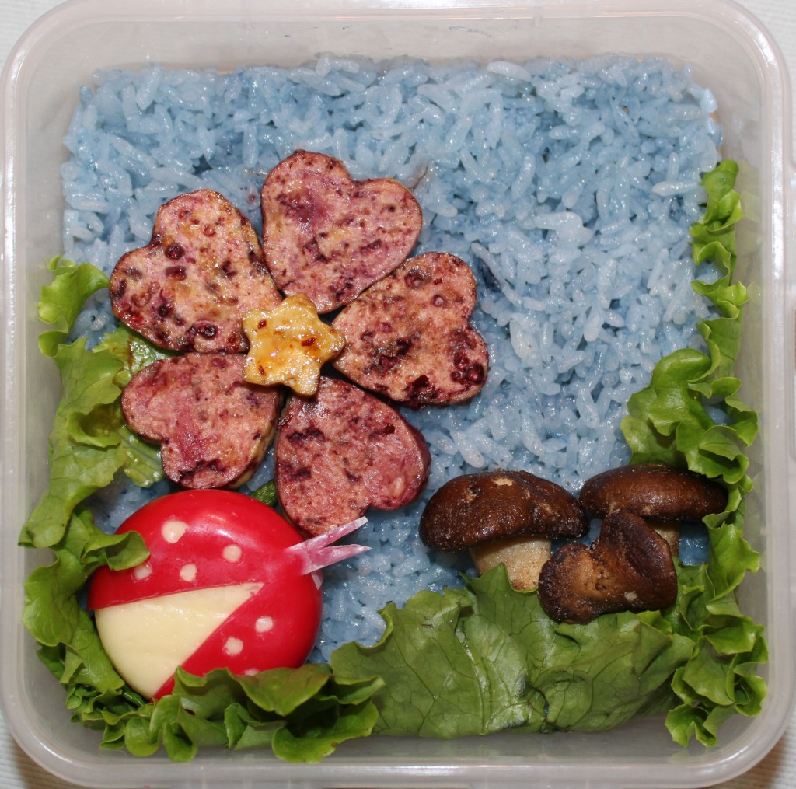

- The Lady Bug
- Ingredients:
- Rice
- Tofu
- Dried Shitake Mushrooms
- Baby Babel Cheese
- All Natural Food Coloring
- Green Leaf Lettuce
- Soy Sauce
- Directions:
-
- Place green leaf lettuce around bottom of bento box.
- Mix 1/2 cup of white rice with blue food coloring and fill the entire bottom of bento box.
- Use a heart shaped cookie cutter to form the tofu into shapes, fry in oil until golden brown, then dip in food coloring and soy sauce. Place in bento box in the flower shape as shown.
- Using a sharp knife, trim the wax off of the Baby Babel Cheese as shown and place in bento box.
- Place the dried shitake mushrooms into the lower corner of the bento box ^.^
